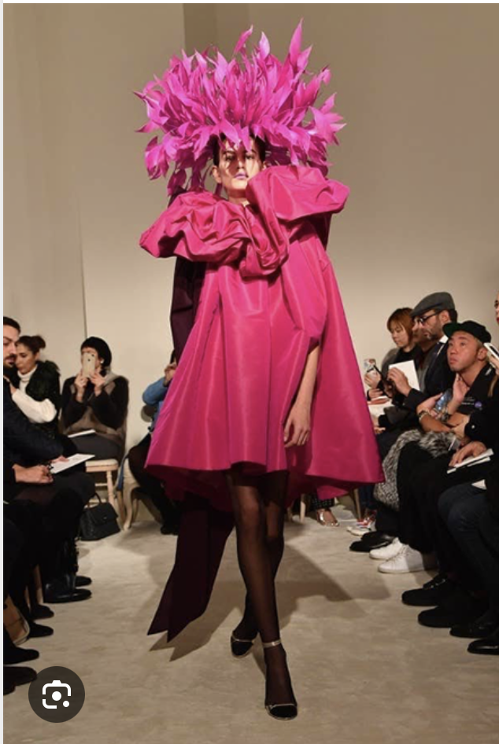
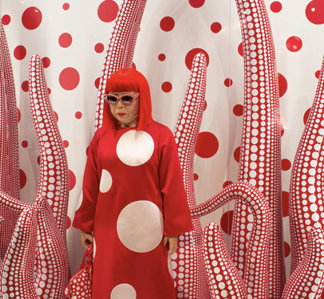

fashion styles
classic style
Clean lines, neutral colors, and timeless silhouettes define this look. It focuses on longevity rather than trends, with pieces like tailored blazers, crisp button‑downs, and structured trousers.
Streetwear
Born from skate, hip‑hop, and youth culture, streetwear blends comfort with bold branding. Oversized hoodies, graphic tees, sneakers, and relaxed fits are central to this style.
Bohemian
Inspired by 1960s and 70s counterculture, boho style embraces flowy fabrics, earthy tones, and handcrafted details. Think maxi dresses, fringe, embroidery, and layered accessories.
A local place to get streetwear

summary of fashion styles
Fashion styles represent different ways people express identity, culture, and mood through clothing. Classic style focuses on timeless, polished pieces that never go out of fashion. Streetwear blends comfort with bold, urban influences, often featuring oversized fits and statement sneakers. Bohemian (Boho) embraces free spirited, artistic looks with flowy fabrics and earthy tones. Minimalist style strips outfits down to simple shapes and neutral colors for a clean, modern feel. Edgy or alternative fashion uses dark palettes, leather, and unconventional details to create a rebellious aesthetic. Athleisure merges athletic wear with everyday outfits, prioritizing comfort while still looking put together.
Together, these styles show how fashion can shift from refined to expressive, simple to bold, giving people endless ways to define their personal look.
another example of fun fashion

More snipbets of fashion